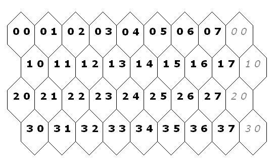

Gilix, a mythical character, was the official messenger of the Tagusland king because he was known to transport a message between any two points in the fastest possible way. Until recently, few knew that his speed was the combination of his wisdom with a magical potion that he had created and personally prepared. After drinking his potion, he could travel twice as fast as he would usually do until he reached his destination. Unfortunately, the ingredients for cooking the potion could only be found in places with rare weather conditions and they should be used immediately or they would loose their magical power.
Based on the given legend, a software house has decided to create a computer game where the hero, Gilix, transports a message between two points in a map.
Every map is composed of a cylindrical grid of hexagons, with coordinates as represented in the following figure. In cylindrical grids, the leftmost hexagons are adjacent to the rightmost ones. For example, from the hexagon with coordinates (0,0), Gilix can move to the hexagons (0,1), (1,0), (1,7), and (0,7). From the hexagon with coordinates (1,7), Gilix can move to the hexagons (0,7), (0,0), (1,0), (2,0), (2,7), and (1,6).

Each hexagon has its own type of terrain, which is characterised by a positive even integer, called the standard cost of the hexagon. From a given hexagon, Gilix can move to any adjacent hexagon spending a number of time units that depends on the standard cost of the destination hexagon. The number of time units is:
As in the legend,
Gilix can prepare and drink his magic potion only once
and in a unique hexagon of the map.
Assume that, when Gilix reaches that hexagon,
he can prepare and drink the potion without spending any time unit.
Problem
Given a map
(composed of a cylindrical grid of hexagons,
with their standard costs),
the origin and the destination of the travel, and
the place where Gilix can prepare and drink the potion,
compute the minimum number of time units
Gilix needs to perform the mission.
Input
The first line contains a pair of integers, L and C, separated by a space:
The following L lines contain a representation of the map from top to bottom. Each line contains C positive even integers, separated by a space, which represent the standard costs of the hexagons on that line (from left to right). No standard cost exceeds 30.
Each of the following three lines contains two integers, X and Y, separated by a space, which identify the coordinates of a hexagon in the map:
The first line specifies the initial position of Gilix,
the second line specifies his final destination, and
the third line indicates the place
where the magic potion can be prepared and drunk.
Output
The output consists of one single line
that contains the minimum number of time units necessary
to travel from the initial to the final position.
Sample Input
4 8 4 2 2 2 4 4 6 10 2 6 8 4 4 4 4 2 8 2 6 8 4 4 4 6 6 4 4 6 8 4 4 4 0 0 3 4 1 1
18